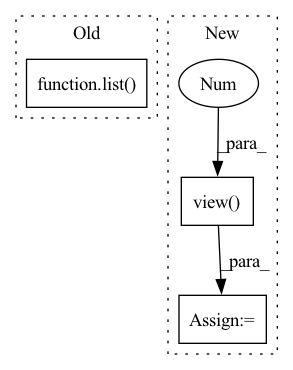

Pattern ID :18810
Before Change
def calc_bandwidth(kernel, kernel_num=10, max_scale=2, min_scale=0.1):
// * kernel: [batch_size, particle_num, particle_num]
kernel_mean = kernel.mean(-1).max(-1)[0]
scale_list = list( np.linspace(min_scale, max_scale, kernel_num))
bandwidth_list = [(kernel_mean * scale).view(-1, 1, 1).detach() for scale in scale_list]
return bandwidth_list
After Change
def calc_bandwidth(set1, set2, kernel_num=10):
batch_size = set1.size(0)
seq_len = set2.size(0)
set1_centre = set1.mean(-1).view(-1 , 1)
set2_centre = set2.mean(-1).view(1, -1)
distance = (set1_centre - set2_centre).pow(2).pow(0.5).max(-1)[0].max(-1)[0]
delta_list = [distance / np.sqrt(2 * (i + 1)) for i in range(kernel_num)]
bandwidth_list = [((2 * delta ** 2)).detach() for delta in delta_list]
return bandwidth_list
In pattern: SUPERPATTERN
Frequency: 4
Non-data size: 3
Instances Fragment ID: 61099014
Project Name: deligentfool/dqn_zoo
Commit Name: 23f02caeca29f856c16efb0b1f26b0bfbf15efe9
Time: 2020-10-28
Author: 1027660817@qq.com
File Name: MMD_DQN/mmd_dqn.py
M Class Name: AnonimousClass
N Class Name: AnonimousClass
M Method Name: calc_bandwidth(3)
N Method Name: calc_bandwidth(4)
M Parent Class:
N Parent Class:
M File Name: MMD_DQN/mmd_dqn.py
N File Name: MMD_DQN/mmd_dqn.py
M Start Line: 10
M End Line: 14
N Start Line: 32
N End Line: 39
Before Change
else:
m_parameter = torch.Tensor([0])
for parameter in list( model.parameters()) :
m_parameter = torch.cat((m_parameter, parameter.data.view(-1)))
return m_parameter[1:]After Change
Squash model parameters or gradients into a single tensor.
parameters = [param.data.view(-1 ) for param in model.parameters()
] // vectorize each model parameter
m_parameters = torch.cat(parameters)
if cuda:
m_parameters = m_parameters.cuda()
return m_parameters
Fragment ID: 61099020
Project Name: smilelab-fl/fedlab
Commit Name: 12925dd3ac83f8a9e1fbd4ed32fb3ec602217a77
Time: 2021-04-09
Author: 928255708@qq.com
File Name: fedlab_core/utils/serialization.py
M Class Name: AnonimousClass
N Class Name: AnonimousClass
M Method Name: ravel_model_params(2)
N Method Name: ravel_model_params(2)
M Parent Class:
N Parent Class:
M File Name: fedlab_core/utils/serialization.py
N File Name: fedlab_core/utils/serialization.py
M Start Line: 10
M End Line: 19
N Start Line: 8
N End Line: 15
Before Change
torch.nn.init.orthogonal_(self.weight)
def forward(self, inp):
size = list( inp.size())
size[1] = self.out_features
data = self.unfold(inp)
data = self.weight.unsqueeze(0).expand(size[0], -1, -1).bmm(data)
data = data.view(*size)After Change
def forward(self, inp):
batch, feat, width, height = inp.size()
output = torch.cat([torch.zeros((batch, 1), device=inp.device, dtype=inp.dtype), inp.view( batch, -1 ) ], 1)
output = output.gather(1, self.kernel.expand(batch, -1))
data = output.view(batch, feat * 9, width * height)
data = self.weight.unsqueeze(0).expand(batch, -1, -1).bmm(data)
data = data.view(batch, self.weight.size(0), width, height)
return data Fragment ID: 61099021
Project Name: clashluke/perftorch
Commit Name: 5c6b4d3d242e097e6f09800a68bfbe2275d9b16f
Time: 2020-09-05
Author: 39779310+ClashLuke@users.noreply.github.com
File Name: dilatedconv.py
M Class Name: DilatedConv
N Class Name: DilatedConv
M Method Name: forward(2)
N Method Name: forward(2)
M Parent Class: torch.jit.ScriptModule
N Parent Class: torch.jit.ScriptModule
M File Name: dilatedconv.py
N File Name: dilatedconv.py
M Start Line: 54
M End Line: 58
N Start Line: 41
N End Line: 46
Before Change
def test_encode_graph_returns_the_expected_shape(self):
// Given
time_steps = 1
encoded_graph_shape_expected = list( BASE_GRAPH_NODE_FEATURES.shape)
// When
encoded_graph_shape = rnn_cpp.encode(time_steps,
self.number_of_nodes,After Change
// Given
time_steps = 1
batch_size = 1
encoded_graph_shape_expected = list(BASE_GRAPH_NODE_FEATURES.view(1 , -1) .shape)
// When
_, _, encodings, _, _ = rnn_cpp.forward(time_steps, Fragment ID: 61099016
Project Name: kovanostra/message-passing-neural-network
Commit Name: 0a1546bfb68f5863677f05e18f6aa41ea7816813
Time: 2020-06-22
Author: kovanostra@gmail.com
File Name: tests/model/test_graph_rnn_encoder.py
M Class Name: TestGraphRNNEncoder
N Class Name: TestGraphRNNEncoder
M Method Name: test_encode_graph_returns_the_expected_shape(1)
N Method Name: test_encode_graph_returns_the_expected_shape(1)
M Parent Class: TestCase
N Parent Class: TestCase
M File Name: tests/model/test_graph_rnn_encoder.py
N File Name: tests/model/test_graph_rnn_encoder.py
M Start Line: 68
M End Line: 83
N Start Line: 74
N End Line: 94